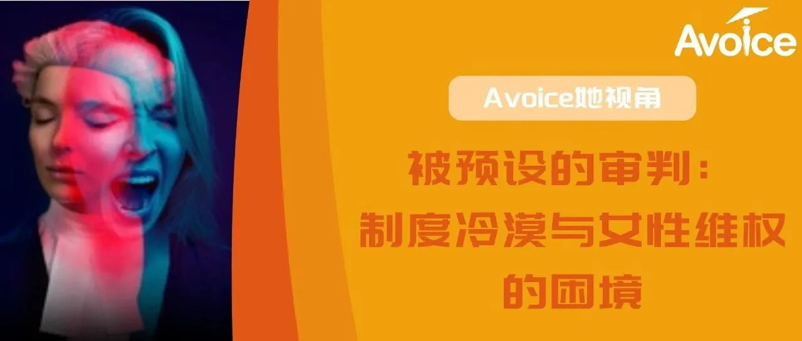
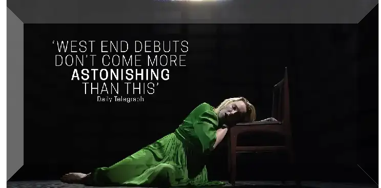
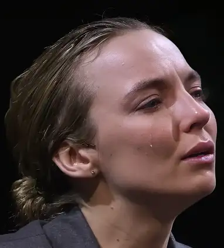

影片介绍：
《初步取证》（原名：Prima Facie）是一部由澳大利亚剧作家苏茜·米勒（Suzie Miller）创作的独角戏剧作品，最初于2019年在悉尼的 Stables Theatre 首演。随后，该剧于 2022 年在伦敦西区的哈罗德·品特剧院（Harold Pinter Theatre）首次上演，作为继澳大利亚首演后的国际首演。该版本由著名演员朱迪·科默（Jodie Comer）主演，同时也是她的舞台剧处女作。
剧情围绕一位年轻且才华横溢的辩护律师特莎·恩斯勒（Tessa Ensler）展开。特莎是一位经验丰富、口才犀利的英国辩护律师，凭借卓越的辩护技巧，在职业生涯中屡创佳绩。她在法庭上坚信法律的理性与中立，直至某日——身着绿色裙装的她在一次醉酒后遭到一位熟识的男性同事朱利安（Julian）的性侵。这一事件令她震惊、迟疑，最终决定报警。
这是她人生中第一次站在自己曾经的“对立面”——受害者的立场上重新审视法律与自我。然而，当她走进警局、接受盘问、配合调查...却逐渐发现：自己的陈述在法律的框架下竟被认定为“证据不足，无法立案”。在这一过程中，她逐步意识到，受害者在司法系统中话语权的脆弱性。
当站在权力结构、举证责任和道德观念的交汇点，过往自己赢下的每一个案件，都可能意味着某些声音被系统性地压制。
被建构的真相
《初步举证》（Prima Facie）的剧名源自拉丁语，意为“乍看之下”或“基于初步印象”。该法律术语用于指根据表面证据即可推定的事实。
剧作家苏茜·米勒（Suzie Miller）曾在采访中提到，最初为该剧设定的标题是“On the Face of It”，后来改为“Prima Facie”。 因为“Prima Facie”更能够直接反映剧中主角Tessa的经历：作为一名辩护律师，她习惯于依据表面证据为被告辩护，但当自己成为性侵受害者时，却发现法律体系对待受害者的方式与她之前的认知大相径庭。
米勒在接受采访时表示，她希望通过这部作品揭示法律体系在处理性侵案件时的主观性和局限性，以及受害者在寻求正义过程中的困难。
戏剧中的泰莎并非出身富裕。当年考入剑桥大学时，院长就曾告诫过她们这群新生们：“看看你的左边，再看看你的右边——你们中有三分之一的人将无法毕业。”这意味着在这所精英学府中，彼此之间更多的是竞争而非支持。即使聪明如泰莎，也不免陷入自卑与胆怯，甚至怀疑自己是否会成为那个被淘汰的人。然而，多年之后，她终于成长为一位意气风发、信奉法律制度的成功女性律师。
她熟练掌控庭审节奏，擅长将证据串联成完整的证据链，并懂得如何引导证人说出对己方有利的陈述。在彼时的她看来，真相并非一种客观的，天然的存在，而是一种可以被建构、被塑造、并最终被采纳的法律叙述形式。在某起案件中，当实习生在与被告沟通时问出：“说实话，这件事到底是不是你做的？”她立刻打断并回应道：“你在道德底线游走。你不能问到底是不是他干的，按照他说的来就行了。”
这正是她所理解的“法律中的真相”——并非受害者所经历的、主观的“真实”，而是可以被法律体系认可、被法庭采信的真相。
绿色裙装的隐喻

在过去许多戏剧与影视作品中，绿色裙装悄无声息地成为一部分女性命运的转折点。它不只是布料与颜色的结合，而是一件在美学中隐喻深远的道具。这件道具象征着女性即将踏入另一种人生状态的临界点。
诸如：在由女性作家玛格丽特的《飘》改编而来的美国电影《乱世佳人》中，女主角斯嘉丽·奥哈拉在经历了一系列痛苦与煎熬后，她很快清醒——“婚姻并不只是浪漫的结合，而是生存的手段”。于是她穿上了一条用窗帘裁剪而成绿裙子，她告诉自己：“Tomorrow is another day.”
如：莫奈早期作品《绿衣女子》中的年轻妻子卡米尔·唐斯（Camille Doncieux），从穿上那条绿裙子开始，她的命运便被丈夫的事业起伏所掌控。最终难以支撑，于1879年在穷困中病逝，享年32岁。
当爱情被现实消磨，自由被社会剥夺，她们的婚姻也在令她们陷入生活与精神的双重贫困。于是在不断地“剥削”之下，没有人能够给予这些女性更多的退路。
直到那个穿上绿裙子的夜晚，泰莎迎来了自己的命运转折。——那并不是浪漫的起点，而是阶级权力失衡下的又一次精致的“性剥削”。
在《房思琪的初恋乐园》这本书中，最终迫使思琪疯掉的那一幕令大多数读者刻骨铭心。李国华为了恐吓另一个受害女孩，于是用童军绳将疲惫不堪，赤身裸体的思琪屈辱地捆绑成了螃蟹的样子。于是思琪感觉自己变成了灵魂的状态，她飘在半空中看着自己的躯体。她疯掉了。她说“太好了，灵魂要离开身体了。我会忘记现在的屈辱，等我再回来的时候，我又会是完好如初的。”
而在初步举证中，也存在似曾相识的一幕。性侵犯发生时，朱利安一边压制泰莎的双手一边捂住她的嘴巴并实施暴行时。泰莎说：“I feel myself leave my body.I am there,But I am not.”（我感觉我离开了自己的身体，我在这，但我又不在这。）
那些施暴者的禽兽行径，那些被践踏的尊严，那些随之而来的羞辱、审判与质疑。痛苦确实发生，无人能否认。但庆幸的是——泰莎的灵魂，终于回到了她的身体。
她选择走进警局。可在经历了一连串的回忆、盘问与心理动荡后，她不再能以一名律师的身份，冷静而专业地去陈述强奸的法律定义。她只能一次又一次地低声说出：“我不知道”“我不确定”这些模糊不清的言辞。这像是一种对自我意识的保护机制。她必须亲自咽下这个字眼的全部苦味，才能真正理解它的分量。
也正是在这一刻，她开始动摇，质疑自己过去所热爱，依赖的那个法律系统。
法律从未真正理解过女性
法律追求的“真相”，并不等于客观真相，而是司法可以接受的真相（truth admissible in court）。这种“真相”其实是高度格式化的。它要求——证人证词必须清晰一致，案件情节要逻辑自洽，感性因素不得干扰判断。而性侵案的特殊性在于，它天然地破坏了法律想要的整洁叙述，受害者往往在惊恐、羞耻、创伤下，回忆不完整。并且有些女性常因受害后的反应，例如：不报警、不反抗、继续交往等，便被归纳于“不合常理”。

这就导致一种荒谬的悖论：法律在性侵案件中所要的“真相”，正是受害者无法提供的东西。法律不会撒谎，只是它所谓的“真相”，不被允许拥有人性的色彩。
在这些制度之网筛出的碎片里。充斥着，女人身体深处那一声哽咽的“不要”，充斥着浴室里的瘫软与迟钝，充斥着被羞辱到沉默的一个又一个夜晚。法律的真相是清晰的，而强奸的真相是混乱的。前者要求一种线性记忆，后者却需要不断地在一片废墟中，重建自我。
最终，经历过无数个痛苦的日夜之后，泰莎站上法庭。她反复地在内心质问自己：“我有没有反抗？”“我是不是太醉了？”“我怎么就没能逃脱？”她试图把耻辱归因于自己。 但她不明白，这些问题不再是对事实的判断，而是一种被社会悄然植入她意识中的自我攻击。在某时某刻中，整个社会似乎都在悄声耳语：“你有罪。”你喝酒了你有罪，你化妆了你有罪，你穿得花枝招展你有罪。
这个世界太擅长让女性对自己的伤痕“负责”。于是，原本属于施暴者的罪责被一层层剥离，转而披在受害者单薄的肩膀上。羞耻被内化，成为女性身体的一部分，仿佛血液流动的本能之一。没有人有资格使用“君子不立危墙之下”去教育受害者。所谓“君子不立危墙之下”强调的是自保意识，不是对加害行为的正当化。即便一个人“靠墙而立”，真正的问题不是“为什么站那儿”，而是“谁在推墙”。
戏剧的后半段，泰莎在法庭中宣告：“我现在处境很特殊，通常我站在辩护席，现在我作为原告、证人、受害者站在法庭上。”她环顾四周——全是男人。甚至连引导她入席的人都是男人。整个制度的布景，从审判、调查、辩论到“可信度”的判断标准，似乎都是男性书写的脚本。
“性侵案件在错误的轴上旋转，”她说。 因为法律从未真正理解女性记忆的方式、身体的反应机制、羞耻的缄默。而当法院仍旧要求“干净利落的证据链”，它其实是在要求女人的创伤必须“配得上”它的法律形式。她说“我看见了所有在我之前走进这里的女性，和在我之后即将踏足这里的女性”。
她指着屏幕外的我们。她呐喊：“三分之一的女性都遭受过性侵犯，你看看你左边时，看看你右边，她是我们中的一员。”正如当年初入剑桥时，校长的话：“看看你的左边，再看看你的右边，三分之一的人将无法毕业。”但她却不再如当年的自卑胆怯，她呐喊：“法律系统让我看起来像个骗子，它让我破碎不堪。我破碎不堪，但我依旧在这，我不会沉默。有些事必须要改变。”
在极度的创伤之后，她也在崩坏的信仰中重建了一种新的真理：“不是逻辑的完美，而是自我情绪的诚实；不是一致性的叙述，而是一种基于创伤的真实反应。”情绪与痛苦就是一种，于受害者而言如影随形的证据。
撰稿｜杨素
编辑｜伊哲
排版&封面｜张晓雨
图片来源｜豆瓣